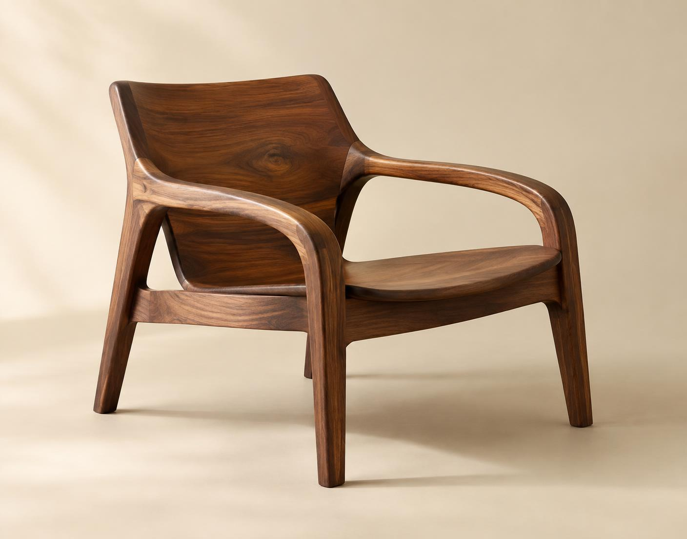
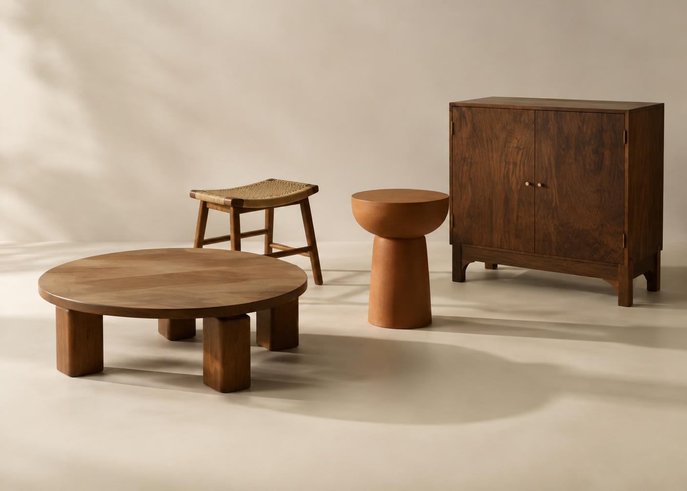

Choose
Responsibly sourced Indian walnut, teak, and cane are selected for character—not uniformity.

Craft / Rajasthan, India
Our way of making
Behind every Aakaar piece is a conversation between designer, material, and maker. We begin with the timber’s natural character and work slowly toward a form that feels inevitable.
Responsibly sourced Indian walnut, teak, and cane are selected for character—not uniformity.
Each curve is drawn, cut, and refined by hand in our partner workshops.
Time-tested joinery gives strength without unnecessary metal fittings.
Natural oils protect the surface while allowing the wood to breathe and deepen.
Knowledge of place
Solid timber is cut, joined, and balanced by workshops known for architectural furniture.
Edges and details are worked with hand tools, carrying the slight rhythm of the maker.
Natural cane and cotton cord are tensioned slowly for strength, comfort, and repairability.

Material 01
Rich, expressive, and remarkably resilient. We celebrate its shifting grain rather than hiding it beneath heavy colour.
Material 02
Dense, stable, and already marked by time. Salvaged teak is carefully cleaned and recut, preserving small traces of its former life.

Living with wood
Dust with a soft, dry cotton cloth. Avoid silicone polishes and harsh cleaners.
Use coasters for hot or wet vessels, and wipe spills without letting them settle.
Let patina develop naturally. We can refresh the oil finish whenever it needs renewal.
Our promise